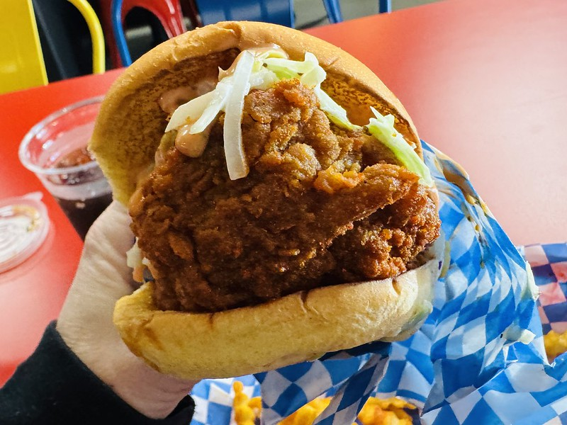

Fried Chicken Sandwich

Description:
For those craving a fried chicken sandwich on a Sunday,
follow this recipe to satisfy your craving. This crispy golden-fried chicken breast
will have a crunchy and juicy feeling.
Ingredients:
- 3 skinless, boneless chicken breast halves
- 12 dill pickle slices, with brine
- peanut oil for frying
- 1 cup all-purpose flour
- 2 tablespoons powdered sugar
- 1 teaspoon salt
- paprika
- 1/2 teaspoon ground black pepper
- 1/2 teaspoon celery salt
- 1/2 teaspoon dried basil
- 2 large eggs
- milk
- 2 tablespoons butter, softened
- 6 sandwich buns
Steps:
- Place each chicken breast between two sheets of heavy plastic
on a solid, level surface. Firmly pound chicken with the smooth
side of a meat mallet to an even thickness. Cut each breast in
half and place in a bowl. Pour pickle brine on top and let sit
for 1 hour.
- Meanwhile, mix flour, powdered sugar, salt, paprika, pepper,
celery salt, and basil in a bowl.
- Whisk eggs and milk together in another bowl.
- Drain liquid from the chicken and rinse off briefly.
Shake any excess liquid from chicken.
- Heat oil in a deep-fryer or large skillet to 350 degrees F (175 degrees C).
- Dip each piece of chicken into the flour mixture, then into the
egg-milk mixture, then coat again with the flour. Dip each piece again, if desired.
- Deep-fry chicken, a few pieces at a time, until golden brown,
2 to 3 minutes per side. An instant-read thermometer inserted
into the center should read at least 165 degrees F (74 degrees C).
- Let chicken rest on a cooling rack set over a baking sheet for 5 minutes.
While chicken is resting, lightly butter each sandwich bun
and toast them in a skillet.
- Add 2 pickle slices to the bottom of each bun, then a chicken piece,
then top with the other bun. Repeat to make remaining sandwiches.
Recipe adapted from Allrecipes.com
Home